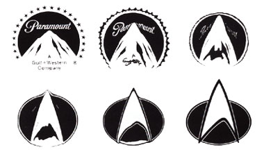

|
Capítulo
1
O Combustível do Mundo Moderno
Conheça
a maneira inventada pela Paramount para vender a nova série
de Jornada nas Estrelas para a TV americana
Em
setembro de 1987, após um hiato de mais de 18 anos, era exibido
nos Estados Unidos um episódio de uma série de televisão com o
título "Jornada nas Estrelas". Para os fãs, a concretização
de uma longa espera. Para os executivos da Paramount, a realização
de que havia uma forma de se obter lucro produzindo uma série
televisiva de ficção científica.
A verdade é que só existe um fator determinante na realização
do velho anseio dos fãs por novos episódios: dinheiro. Séries
de ficção científica até então eram raras, pois envolviam custos
bem mais elevados que os de uma série de televisão normal. Normalmente,
encontrava-se alternativas que dispensassem o uso de cenários
elaborados ou efeitos especiais mirabolantes - séries como "O
Homem de Seis Bilhões de Dólares" exemplificam bem esta alternativa.
Uma série de "Jornada nas Estrelas", porém, envolve a construção
de cenários fixos caros, e uso constante de efeitos especiais.
Os custos estimados para cada episódio, estratosféricos, não equilibravam
a solicitação dos fãs - e, assim, nunca saía do papel. Uma única
vez durante o hiato entre as duas séries cogitou-se seriamente
a produção de uma nova série. Em 1977, a Paramount decidiu criar
uma nova rede de televisão, e para tanto escolheu, como carro-chefe
do novo canal, produzir uma nova série de Jornada nas Estrelas.
Para tanto, cancelou a então pré-produção de um filme de Jornada,
então na fase de desenvolvimento de roteiro, transformando o projeto
em uma série televisiva. Cenários foram construídos, o elenco
original, exceto Leonard Nimoy, fora contratado, roteiros foram
escritos. Tudo indicava que, desta vez, a Enterprise realmente
voltaria a cruzar as telinhas do povo americano. "Jornada
nas Estrelas: Fase II", começava a sair do papel.

A alegria dos fãs, porém, não durou muito. Poucos meses depois,
a Paramount decidiu que, afinal, não iria lançar uma nova rede
de televisão e, portanto, o projeto da Fase II foi cancelado.
Tentando recuperar tudo o que investira no projeto, porém, o episódio
piloto foi transformado em um roteiro cinematográfico, a ser dirigido
por Robert Wise. Assim, o que seria uma nova série televisiva
se tornou o pontapé inicial de uma série de filmes. Em 1986, esta
série de filmes já havia se tornado um sucesso para a Paramount.
Os três primeiros, juntos, arrecadaram quase 240 milhões apenas
nos cinemas americanos, tendo custado apenas cerca de 80 milhões.
O quarto filme da série, "A Volta Para Casa", estava em
produção e a Paramount sentia ter mais um vencedor nas mãos. A
pergunta de um milhão de dólares, então, era: será possível encontrar
uma forma de capitalizar este sucesso também na televisão?
A situação, porém, havia sofrido algumas alterações. O elenco
original, agora astros do cinema, dificilmente aceitaria participar
de um seriado com salários dentro dos valores previstos pela Paramount.
Como já mencionado anteriormente, os elevados custos com cenários
e efeitos especiais não permitiriam que os custos com atores ultrapassassem
um certo limite. Se Jornada nas Estrelas seria produzida,
seria com um elenco novo. Poderia fazer sucesso sem Kirk, Spock
e McCoy? Um homem acreditava que sim. O mesmo homem que vinte
anos antes fora responsável pela primeira série de Jornada: Gene
Roddeberry.
 Roddenberry
estava praticamente afastado da franquia desde o lançamento do
primeiro filme. Os conflitos em que se envolvera durante a produção
motivaram a Paramount a gentilmente colocá-lo como consultor,
deixando a produção dos filmes a cargo de Harve Bennett. Sem poder
afetar de modo algum a direção que a franquia tomava, Roddenberry
magoou-se, e via seu projeto se afastar do que considerava, então,
a sua visão de um futuro otimista para a humanidade. A concepção
de uma série totalmente nova, com um elenco novo, era a sua oportunidade
de não apenas se envolver novamente com a franquia, mas de fazê-la
como acreditava que deveria ser. Para os executivos da Paramount,
porém, a questão principal ainda era dinheiro. Cada episódio da
nova série teria um custo estimado de US$ 1 milhão. Na época,
todas as quatro redes de exibição americanas - NBC, CBS, ABC e
FOX - estavam interessadas na exibição do programa, mas exigiam
que o contrato inicial estipulasse apenas o episódio piloto e
treze episódios, e a continuidade de temporada ficaria condicionada
ao retorno em audiência destes primeiros episódios. Roddenberry
estava praticamente afastado da franquia desde o lançamento do
primeiro filme. Os conflitos em que se envolvera durante a produção
motivaram a Paramount a gentilmente colocá-lo como consultor,
deixando a produção dos filmes a cargo de Harve Bennett. Sem poder
afetar de modo algum a direção que a franquia tomava, Roddenberry
magoou-se, e via seu projeto se afastar do que considerava, então,
a sua visão de um futuro otimista para a humanidade. A concepção
de uma série totalmente nova, com um elenco novo, era a sua oportunidade
de não apenas se envolver novamente com a franquia, mas de fazê-la
como acreditava que deveria ser. Para os executivos da Paramount,
porém, a questão principal ainda era dinheiro. Cada episódio da
nova série teria um custo estimado de US$ 1 milhão. Na época,
todas as quatro redes de exibição americanas - NBC, CBS, ABC e
FOX - estavam interessadas na exibição do programa, mas exigiam
que o contrato inicial estipulasse apenas o episódio piloto e
treze episódios, e a continuidade de temporada ficaria condicionada
ao retorno em audiência destes primeiros episódios.
Como estas redes pagariam por cada episódio menos que seu custo
total (prática normal nos EUA), e com a Paramount vendo que o
lucro viria apenas quando a série fosse vendida para syndication,
um contrato de apenas treze episódios era insuficiente para se
assumir o risco. O mercado de syndication, porém, já se
mostrara extremamente vantajoso para Jornada. Na década
de 70, a exibição dos episódios da série original de Jornada deu
início ao sucesso da franquia. Neste processo, emissoras independentes
ao longo do país compram episódios e programas já exibidos pelas
grandes emissoras para exibição em seu grade.
Na década de 80, os programas originalmente produzidos para syndication
eram principalmente game-shows exibidos à tarde, desenhos para
crianças ou produções realistas exibidas tarde da noite. Para
a Paramount, a exibição de sua nova série diretamente em syndication
parecia a melhor opção. Porém, os contratos normais para a venda
de séries em syndication previam pacotes de 69 episódios - desta
vez, um número grande demais para o estúdio. Parecia que
a produção se encontrava em um beco sem saída. Até que a Paramount
criou uma proposta nova, extremamente ousada. Ofereceu sua série
totalmente nova, com valores de produção dignos das grandes emissoras,
do seguinte modo: uma temporada completa com 26 episódios custaria
aos exibidores... nada. Para os exibidores, existiam até então
dois modos para comprar programas. O primeiro, cada estação faz
um pagamento em dinheiro ao vendedor, baseado no tamanho da audiência
local e nos índices de audiência estimados de cada episódio, usualmente
divididos em categorias demográficas. Durante a exibição, a estação
vende espaços publicitários para os intervalos, esperando recuperar
o que gastou na compra do programa. No segundo modo, o exibidor
paga uma taxa menor ao vendedor, concedendo a este último, porém,
alguns minutos de espaço publicitário. O vendedor então negocia
diretamente com os patrocinadores diretamente a exibição de propaganda
neste minutos. Para sua nova série porém, a Paramount criou uma
sistemática totalmente nova. Nesta nova metodologia, os exibidores
não pagariam ao estúdio centavo algum pela aquisição do
programa. A Paramount, porém, teria direito a sete minutos de
espaço publicitário para seus patrocinadores, e os exibidores
teriam o tempo restante para seus próprios patrocinadores - cerca
de cinco minutos.
Deste modo, os exibidores conseguiriam lucrar com a exibição da
série sem investir absolutamente nada. Para conquistar definitivamente
os exibidores, a Paramount criou ainda mais uma condição. Se a
nova série não tivesse o sucesso necessário para garantir uma
segunda temporada, o exibidor poderia exibir também os episódios
da série clássica nas mesmas condições do acordo, ou seja, sem
pagar nada para ela. Era uma proposta de alto risco para o estúdio.
Se desse errado, seria um prejuízo de cerca de 30 milhões de dólares.
Se funcionasse, porém, a Paramount conseguiria entrar com sua
nova série diretamente no lucrativo mercado de syndication.
Os exibidores, porém, que não corriam risco nenhum, gostaram de
idéia, e assinaram os contratos. Com a exibição garantida nos
termos que lhe eram mais interessantes, a Paramount deu o sinal
verde para a produção de sua nova série. Jornada nas Estrelas
iria mais uma vez invadir o universo televisivo.

|